观察问题
还原用户场景，识别任务与流程中的真正阻碍。
从需求到方案，从体验到验证：这套方法贯穿我的产品实习、研究项目和工具实践。
从医药 AI 产品的复杂任务，到中医药双语语料的检索需求，再到人工流程自动化，我关心的是如何识别核心矛盾、控制方案复杂度，并让结果可以被检查。
还原用户场景，识别任务与流程中的真正阻碍。
澄清目标、梳理约束、定义 MVP 与验收标准。
将技术能力组织成页面、交互状态与操作路径。
通过真实数据、实验对比和问题复测修正判断。
一段从竞品分析开始，逐步走向机制设计、首页改版和质量验收的完整实习经历。
在医药 ToB AI 产品从问答向复杂任务处理探索的过程中，我最初被安排研究外部 Agent 产品；随后逐步承担竞品框架搭建、交互机制设计、MRD 与 MasterGo 原型，以及与设计、策略和研发的方案对齐。核心问题不是增加多少功能，而是：如何减少任务误解，让用户理解执行状态，并知道结果依据什么。
专业场景下，一个看似简单的提问可能包含多个研究目标、不同数据来源和多步执行。如果目标没对齐，后续规划容易跑偏；如果中间过程完全不可见，用户难以判断是否需要等待或调整；如果结果没有来源，专业判断也无法放心使用。
把“用户究竟要什么”和“AI 准备怎样回答”区分为两个判断层次。对于清晰任务减少追问；对复杂、多意图任务则先对齐回答方向，避免带着错误假设继续规划。
mentor 提出节点图方向后，我细化卡片信息层级、展开收起、子任务进度，以及处理中、失败和无法生成结果等状态，让用户看到必要的任务反馈，而不是原始技术日志。
围绕网页、文献和结构化数据等不同来源类型，考虑结果与来源之间的关联、证据摘要和进一步查看路径，让用户能够根据原始信息独立核验。
下面是我根据公开的通用研究任务独立绘制的交互演示。点击四个状态，体验从任务理解到结果核验的信息组织方式。
面对开放性任务，先判断需要哪些约束，避免直接开始错误的搜索方向。
随着智能问答、文档问答和报告生成等模块增加，我把首页问题拆成三个方面：跨模块切换繁琐、首页能力不够集中、新用户不知道该用哪个入口。
我的方案：提出全局左侧导航，重新组织原有提问和文档入口，并用场景案例、示例问题与功能引导帮助用户找到合适的能力。
在 AI 文档解析验收中，我依据已有 MRD 和测试用例核查实体抽取、文内定位、图表识别和翻译等能力，发现冗余实体、定位错误和翻译遗漏等问题。
我的动作：记录与确认问题，提交需求系统，同步研发 / QA，并按修复进度完成第二轮回归测试。
独立完成 Agent MRD 与 MasterGo 原型，经 mentor 多轮讨论迭代，后续设计稿主体沿用了方案结构；需求进入研发、策略、设计、运营等多角色评审和研发排期。我的参与主要覆盖上线前的产品设计与评审阶段。
我从需求取舍和数据规范入手，借助 AI Coding 推进检索系统开发，并使用真实语料测试与验证。
国家级课题下的数字化子任务。围绕 95 个源语料文件、208,442 条中英平行语料，参与数据规范、检索规则、MVP 取舍与功能验收，借助 ChatGPT / Cursor 进行 AI 辅助开发，在本地完成多轮真实数据测试。系统后续由课题组其他成员整合部署，已用于课题内网。
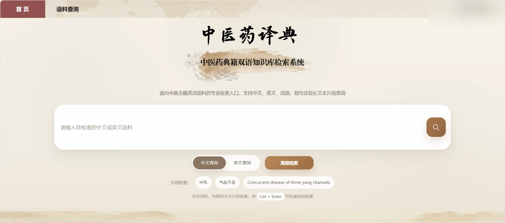
优先完成双语检索、组合筛选、结果展示与导出；不为炫技提前接入不必要的复杂能力。
统一文件和元数据规则，对典籍名称及多译本信息进行梳理，支持稳定导入与检索。
实际测试中定位长文本召回、前后端排序逻辑等问题，推动代码修改并复测。
同样的模型，在不同任务和评测指标下可能呈现不同表现。我更关注结果是否具有可比性。
依托课题组已有语料和评测链路，围绕 17 个候选模型开展实验结果比较；本人实际部署和运行至少 10 个模型/版本，回查历史不一致的测试参数并重跑相关模型，提出 Composite 综合评价需求，完成代码运行及结果核验，并参与既有 PT/SFT、导出与推理验证流程。
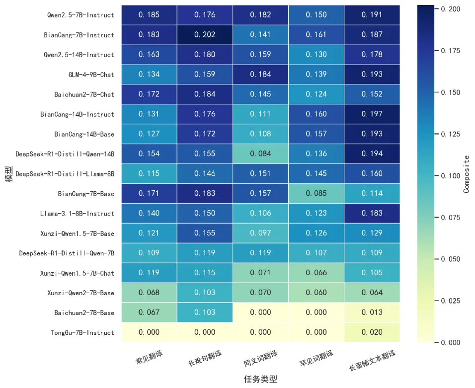
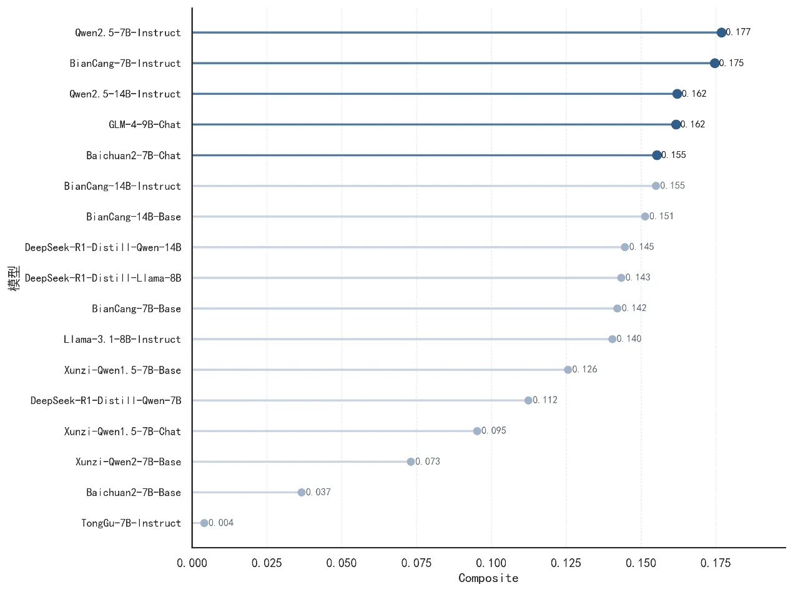
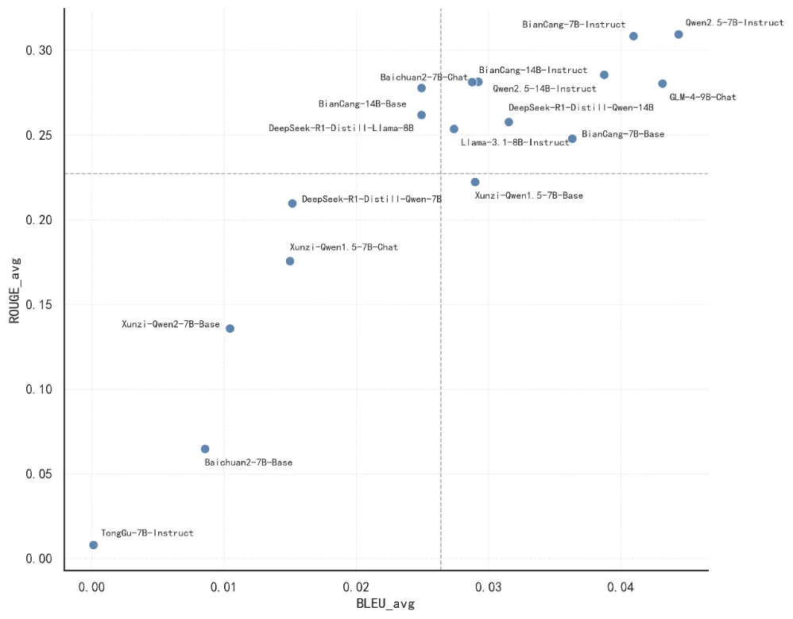
检查历史实验配置，在统一条件下重新执行相关评测。
提出并核验 Composite 的综合比较需求，同时观察不同任务表现。
把任务类型、模型家族和不同指标一起纳入选型判断。
用另外两段实践，补足用户洞察与流程效率方面的产品能力。
作为 5 人团队负责人，围绕低度果茶酒品类的用户偏好和市场机会统筹调查研究。个人重点负责问卷清洗、逻辑回归与线上评论文本处理，并参与将发现组织为产品与电商体验建议。
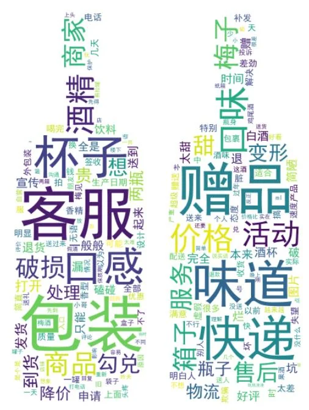
问卷与评论分析属于团队研究；个人主要承担数据清洗、逻辑回归和评论处理。
参与医学信息内容运营，独立跟进 30+ 期指南专题的发布流程。在人工排版中发现重复操作和易错环节后，定义字段与生成规则，借助 AI 辅助 Python 编码制作 Excel → HTML 自动排版工具。
迁移到在线运行环境，降低非技术使用者使用门槛。
沉淀真实发布流程、操作说明与常见异常。
问卷与评论分析属于团队研究；个人主要承担数据清洗、逻辑回归和评论处理。
推送封面、活动海报与校园文创：这些真实作品记录了我如何用视觉组织信息、表达主题。
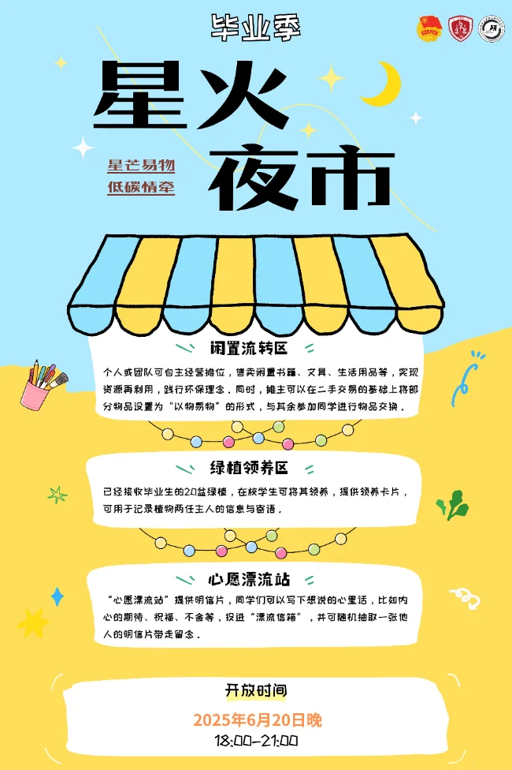
活动海报 / 星火夜市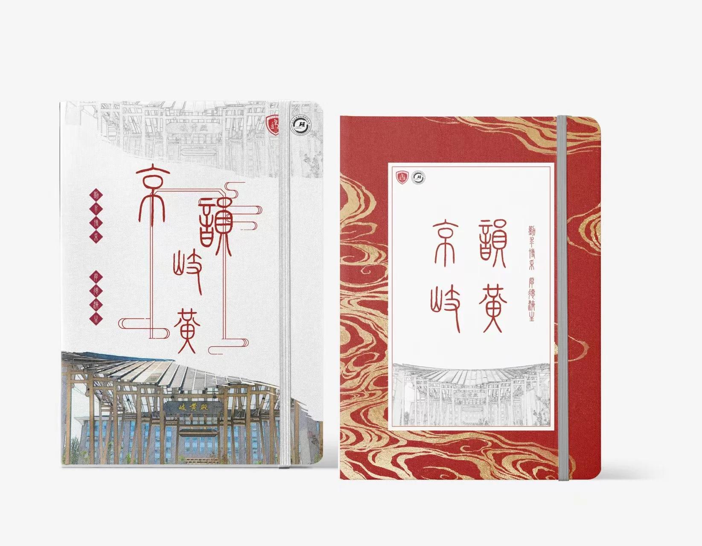
文创视觉系统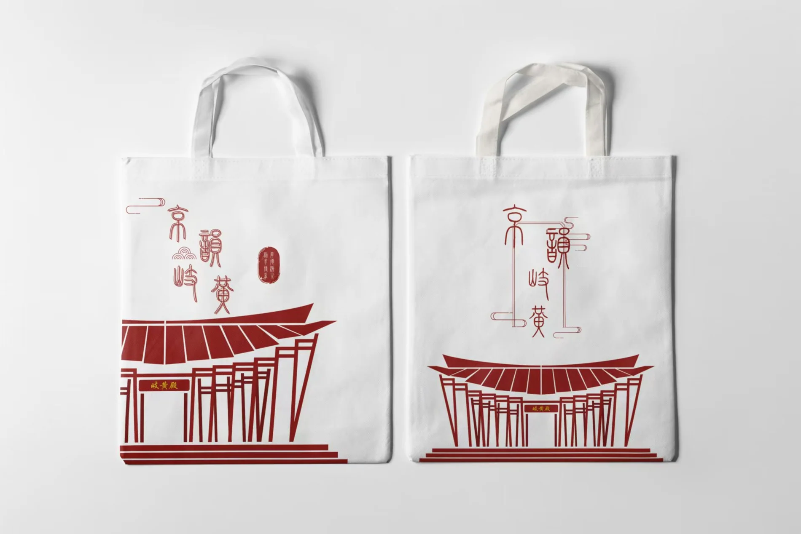
帆布袋 / 文创物料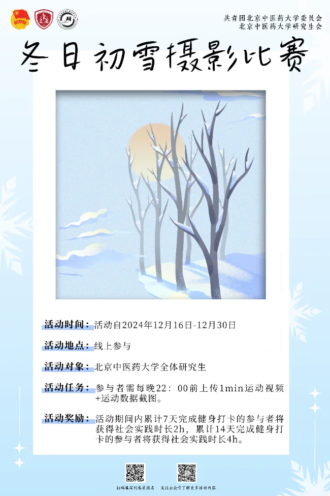
摄影比赛 / 活动传播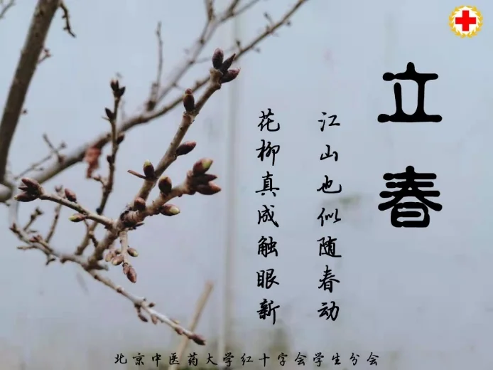
节气专题 / 立春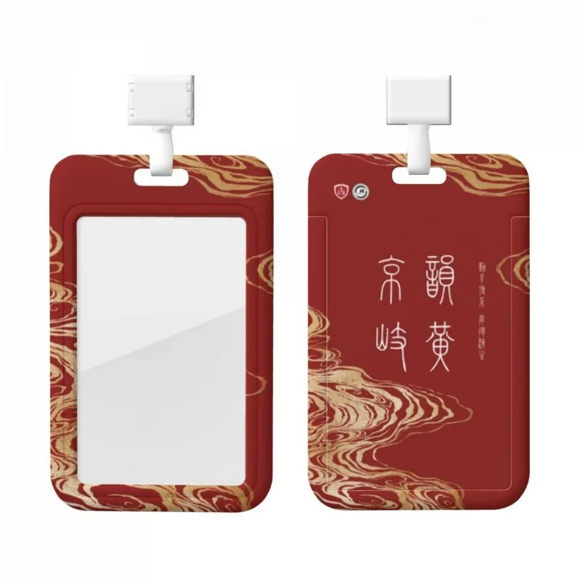
会务物料 / 胸牌从主题理解、信息提炼，到版式设计和内容发布，这段高频实践让我更重视信息是否清晰、表达是否有效。
VISUAL DESIGN × PRODUCT CLARITY工作之外，我喜欢用镜头记录色彩、光线和那些值得停下来的瞬间。
平时会拍景、拍猫、拍那些让我停下来的画面。摄影对我来说是一种观察训练：看光线、看节奏、看情绪，也看一个画面为什么会让人想多停留一会儿。
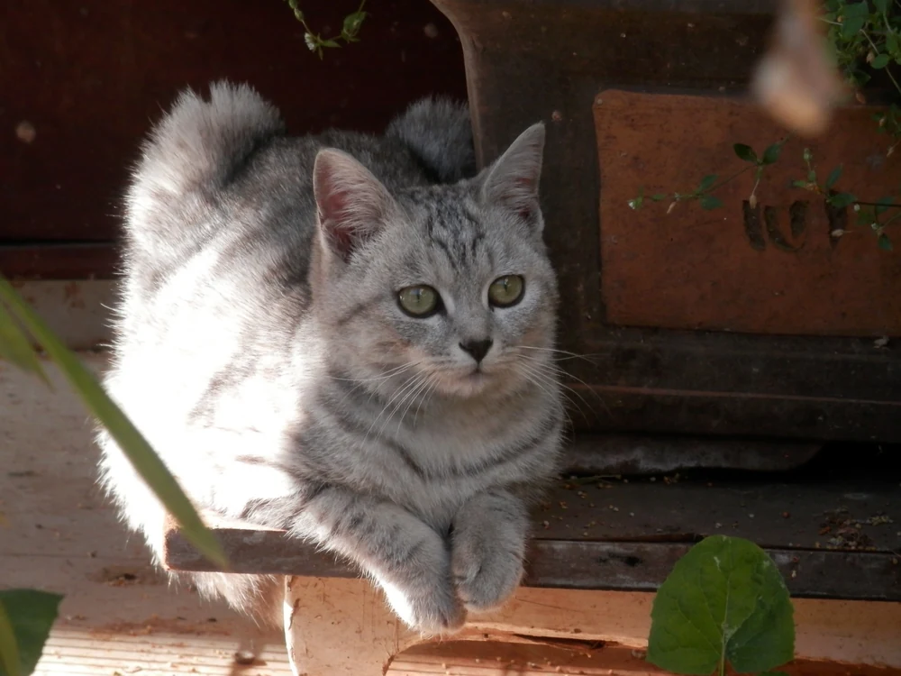
在健康传播课程中，我提出将经典影视元素与健康知识结合，先用小 Demo 验证创意方向，再推动 6 人团队共创、完成脚本定稿与成片审核。两周内产出约 5 分钟作品，获得全班小组最高分。这个小项目让我更确信：让内容更容易被理解，本身就是一项产品能力。
技能按真实使用场景分类；不把「接触过」表述为「精通」，也不把 AI 辅助编码等同于算法研发。
跨专业学术训练与产品实习，让我在业务、数据、用户体验之间不断建立连接。
研究方向：健康大数据管理
关注数据分析与数字化场景中的真实问题
校级一等奖学金、三好学生、优秀团员、大学生讲思政课团体二等奖、北京市大学生戏剧节朗诵银奖，以及第十二届“正大杯”全国大学生市场调查与分析大赛北京赛区三等奖等。
我不是只停留在写文档的产品，也不是把技术理解停在概念层面的人。相比单点能力，我更希望自己成为连接用户问题、业务场景与 AI 技术的人：既能理解复杂能力，也能把它组织成产品方案；既能参与设计，也愿意验证结果、推动落地。